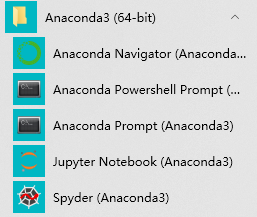

如果你也怕包冲突,就快来吧
当前项目正在咕,敬请期待,所有在咕列表见: Blog咕咕咕
什么是Anaconda ☁ ¶
@官网: Anaconda | The World’s Most Popular Data Science Platform
With over 20 million users worldwide, the open-source Individual Edition (Distribution) is the easiest way to perform Python/R data science and machine learning on a single machine. Developed for solo practitioners, it is the toolkit that equips you to work with thousands of open-source packages and libraries.
@官方指南: Getting started with Anaconda — Anaconda documentation
Anaconda是一个可以管理Python包和Python环境的软件
所谓Python包指的是别人写(第三方)的有一定功能的Python代码
所谓Python环境其实就是Python代码运行时调用的具体版本的Python解释器
所谓管理指的就是我们可以通过Anaconda的conda指令, 随意地创建包含有我们指定的Python包的指定版本的Python环境, 这样做的目的是解决兼容性问题(相互依赖问题)
比如你获得的某段代码采用了Python2时代才有的语法编写的, 自然是不可以用Python3的解释器来运行的.
那就可以创建一个Python2的环境(相当于划出一部分磁盘空间安装一个Python2版本)来复现代码, 然后再创建一个Python3的环境来重新编写他们(重构)也是没有问题的.
Anaconda的安装 💠 ¶
官方指引: Installation — Anaconda documentation
这里只翻译Window版本的安装, 大家也可以直接阅读上面官方的文档
- 点击我 下载Anaconda安装器.
- 推荐: 使用 SHA-256 验证程序完整性. 如果想获取更多的哈希(hashes), 见 What about cryptographic hash verification?
- 双击下载好的安装器运行.
注意: 如果安装器被下载到了
Window的收藏夹文件夹(IE浏览器的数千收藏夹,在你的用户目录里), 请移到其他文件夹运行.¶
- 点击
next(下一步) - 阅读协议条款, 同意的话点击
I Agree(我同意) - 选择
Just Me (只为我),如果是为所有的用户安装选择另一个(这需要管理员权限, 如果弹窗申请权限请确认), 点击next(下一步) - 选择一个安装
Anaconda的目标文件夹, 点击next(下一步)
安装目录路径不可以有空格或者是在7位ASCII字符集以外的Unicode字符,见 FAQ.
-
选择是否要添加
Anaconda到环境变量(PATH). 我们推荐不要添加, 因为这可能干扰其他软件. 可以通过使用Anaconda Navigator(Anaconda导航)或者是 开始菜单里的Anaconda Prompt(Anaconda提示符)来替代. -
悬着是否注册
Anaconda作为默认的Python, 除非你打算安装多个版本的Anaconda或Python, 可以接受默认设置, 保持勾选. -
点击
install(安装)按钮, 如果你想要看Anaconda安装, 可以点击Show Details(显示细节) -
点击
next(下一步) -
可选: 为
Anaconda安装PyCharm, 点击链接跳转 https://www.anaconda.com/pycharm. 也可以不安装PyCharm, 直接点击next(下一步) -
在成功安装之后, 你应该可以看到"Thanks for installing Anaconda(感谢安装Anaconda"的对话框
-
如果你想要了解更多关于
Anaconda Cloud (Anaconda云服务)以及开始入门Anaconda, 可以勾上复选框 “Learn more about Anaconda Cloud (了解更多Anaconda云服务)” 和 “Learn how to get started with Anaconda (了解如何入门Anaconda)”. 点击Finish(完成) -
验证你的安装是否可用 (这里的验证可以按照下文的使用操作)
注意: 如果你使用的是公司的代理, 你还需要一些额外的设置. 参加如何设置你的代理(proxy)
出了问题可以参见 troubleshooting (anaconda.com)
入门参见: Getting started with Anaconda
Anaconda的使用 🚀 ¶
瞧瞧Anaconda给电脑塞了什么📁 ¶
我们点击菜单键调出菜单

可以看到Anaconda默认给出了五个快捷方式
- Anaconda Navigator (Anaconda3)
- F:\Anaconda3\pythonw.exe F:\Anaconda3\cwp.py F:\Anaconda3 F:\Anaconda3\pythonw.exe F:\Anaconda3\Scripts\anaconda-navigator-script.py
- Anaconda Navigator
- F:\Anaconda3\pythonw.exe F:\Anaconda3\cwp.py F:\Anaconda3 F:\Anaconda3\pythonw.exe F:\Anaconda3\Scripts\anaconda-navigator-script.py
- Anaconda Powershell Prompt (Anaconda3)
- %windir%\System32\WindowsPowerShell\v1.0\powershell.exe -ExecutionPolicy ByPass -NoExit -Command "& ‘F:\Anaconda3\shell\condabin\conda-hook.ps1’ ; conda activate ‘F:\Anaconda3’ "
- Anaconda Prompt (Anaconda3)
- %windir%\System32\cmd.exe “/K” F:\Anaconda3\Scripts\activate.bat F:\Anaconda3
- Jupyter Notebook (Anaconda3)
- F:\Anaconda3\python.exe F:\Anaconda3\cwp.py F:\Anaconda3 F:\Anaconda3\python.exe F:\Anaconda3\Scripts\jupyter-notebook-script.py “%DESKTOP%”
- Spyder (Anaconda3)
- F:\Anaconda3\pythonw.exe F:\Anaconda3\cwp.py F:\Anaconda3 F:\Anaconda3\pythonw.exe F:\Anaconda3\Scripts\spyder-script.py
conda 都有些啥 🖐 ¶
官方指引:
*部分翻译自官方文档
Link start ! 🔗 ¶
如果你的是Windows系统
-
Win+S调出搜索框 或者 按下Win菜单键调出菜单 -
直接输入
Anaconda Prompt, 回车即可
如果Anaconda已经加入了你的环境变量,
- 直接
Win+R调出运行 - 输入
cmd回车, 调出命令提示符
如果你的是Mac系统
如果你的是Linux系统
小试牛刀 🔪 ¶
conda --version
在前面我们打开的终端界面, 输入上面的一串字符, 即可调用上面的命令
该命令将输出我们安装的conda版本
conda update conda
升级现在的conda到最新版本
当conda输出的字符出现下面这一行时
Proceed ([y]/n)?
你可以通过输入y或者n然后回车来表示同意或者拒绝
creat创造你的世界 🌱 ¶
conda最棒的的一个功能就是创造各种你想要的同时又会互相冲突的Python环境
试想一下, 如果你在电脑里装了好几个版本的Python解释器并都导入到了电脑的环境变量的这种情况
python
当你在终端里输入上面的命令, 终端将不知道调用哪个版本的Python解释器
而当你使用conda时, 这件事情就变的优雅了许多
conda create --name snowflakes biopython
当你在黑漆漆(当然如果你会美化的话将可能是五彩斑斓的:happy:)的终端输入上面的这串代码并回车后
conda将帮你创造一个独立的像下面描述的虚拟环境
- 名为
snowflakes的 (--name属性后面跟着哪个字符串, 名字就是什么) - 包含有一个和你安装的
Anaconda自带的同版本的Python解释器 - 自动安装有
biopython包
那么如何进入我们创建的世界呢
conda activate snowflakes
输入完回车后, 如果看到终端的命令提示符(比如cmd的是>)的前面
变成了(snowflakes) >这样的状态时
欢迎你进入snowflakes
当然activate后面还可以跟具体的某个环境的目录
这在你从某个地方复制了一份虚拟环境时可以直接激活它时使用
事实上, 不创建新环境, Anaconda也自带了一个名叫base的环境
conda activate
不带名字直接输入激活指令, 默认进入base环境
这个基础环境的本质就是Anaconda的主目录里的那个python.exe
我们创建的新的环境则都在主目录下面的envs里
里面也有python.exe, 但是是我们指定的安装的版本
conda info --envs
这个命令可以获得所有的目前你拥有的环境的名字和位置
带有*号的环境就是当前激活的环境
要切换可以直接输入带有环境名字的激活指令即可
这样就可以优雅的在多个不同的环境里来回穿梭了
conda create --name snakes python=3.5
这里略微的不同是在名字的后面, 指定了要安装的Python的版本
这样就可以创建不同的Python版本的环境啦
conda create --clone ENVNAME --name NEWENV
这样的命令可以按照--clone指定的环境名字, 原样创建一个新的环境
我们自己的环境自己用的顺心, 但是如果你想分享给其他人呢
好像拿U盘复制或者上传略微有些古怪或者不方便
conda env export --name ENVNAME > envname.yml
运行上面的命令吧, 然后就会生成envname.yml文件
把这个文件发给你的朋友吧
如果他的终端的工作目录在envname.yml所在的地方
conda env create
便可以直接安装同样的环境了
conda env create --file envname.yml
也可以直接指定要安装的环境镜像的名字
另一种方式是生成.txt文件
conda list --explicit > pkgs.txt
这里使用conda list --explicit列出所有包和版本
然后通过终端的>的方法, 将所有输出导入到pkgs.txt文件
conda create --name NEWENV --file pkgs.txt
然后生成环境时指定这个文件就好啦
conda deactivate
退出环境可以直接使用这个命令
如果没啥可干的, 也可以直接关掉整个终端窗口
conda create --help
这将直接列出所有creat支持的参数
env掌控世界 🗺 ¶
重要的config 🛠 ¶
官方指引: Configuration — conda 4.8.5.post110+a7bb8d53 documentation
清华镜像: Anaconda-清华镜像使用帮助
conda config --show-sources
帮直接帮你列出你的conda设置文件的位置以及内容
到==>指定的位置, 用记事本打开.condarc即可修改config设置
实际上, 我们通过conda config ...指令做的修改都会记录在这里
conda config --show
显示所有conda设置
conda config --show channels
只显示channels变量
conda config --set show_channel_urls yes
设定(--set)设置选项show_channel_urls的值为yes
conda config --add channels CHANNELNAME
为设置选项channels增添(--add)值: CHANNELNAME
conda config --remove channels https:XXX
删除( --remove)设置选项channels的某个值: https:XXX
conda clean
-i 清除索引缓存
不止如此 🎓 ¶
conda search beautifulsoup4
我们还可以使用search来检索包, 这主要用于我们有时候记不清楚包的名字时可以使用
如果在后面加上参数--info可以获得详细的描述
结果会直接输出在窗口上, 找到想要的包的名字后
conda install beautifulsoup4
就可以安装啦
安装好后
conda list
就可以看到当前环境安装的所有包了
conda list --revisions
将会输出当前环境所有包的变动, 可以用--name指定特定的环境
conda install --name ENVNAME --revision REV_NUMBER
上面命令可以将特定环境还原到特定rev版本
conda install --yes PKG1 PKG2
无需用户确认, 直接安装PKG1和PKG2
编写脚本来操作conda时好用, 这样conda不会停下来等待用户确认了
conda install conda-forge::PKGNAME
从频道conda-forge里安装包PKGNAME到环境
conda install PKGNAME==3.1.4
安装指定版本的包到环境
conda install “PKGNAME[version=‘3.1.2|3.1.4’]”
安装3.1.2或3.1.4版本的包到环境
conda install “PKGNAME>2.5,<3.2”
安装版本号大于2.5并小于3.2的某个版本到环境
conda update --all --name ENVNAME
升级ENVNAME环境里的所有包
conda update -n base conda
升级conda到最新版本
conda update anaconda
升级所有包到最新的Anaconda支持的版本
但是同时会兼顾兼容性和稳定性, 不一定真的是最新的
conda uninstall PKGNAME --name ENVNAME
从ENVNAME环境里删掉PKGNAME包
conda clean --all
删除所有未被使用的缓存文件(包括没有使用的包)
conda remove --name ENVNAME --all
整个删除某个环境
.condarc 文件详解 📑 ¶
官方指引 : Using the .condarc conda configuration file — conda 4.8.5.post110+a7bb8d53 documentation